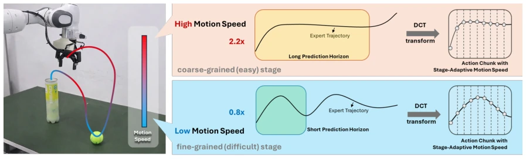
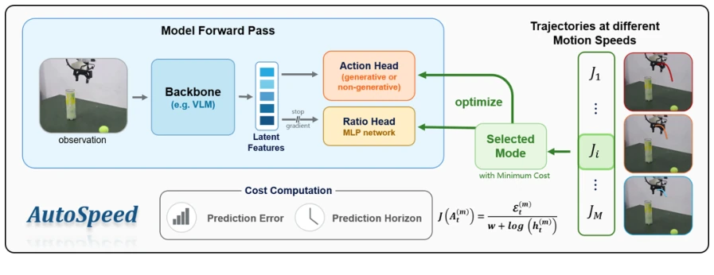
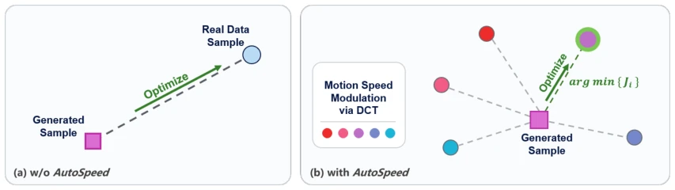
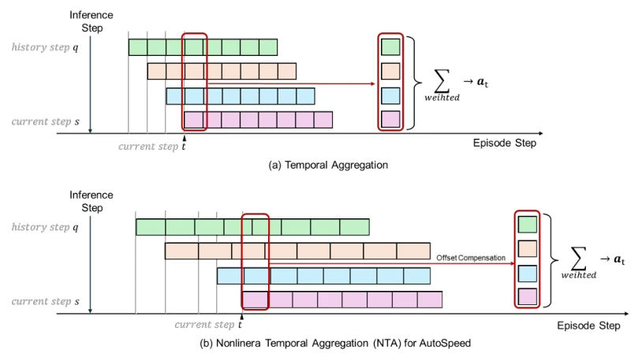
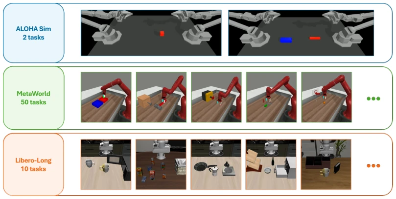
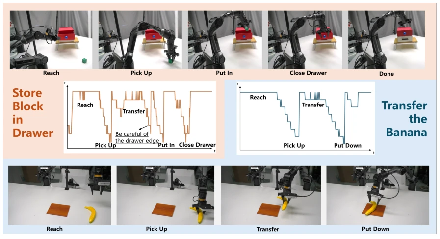
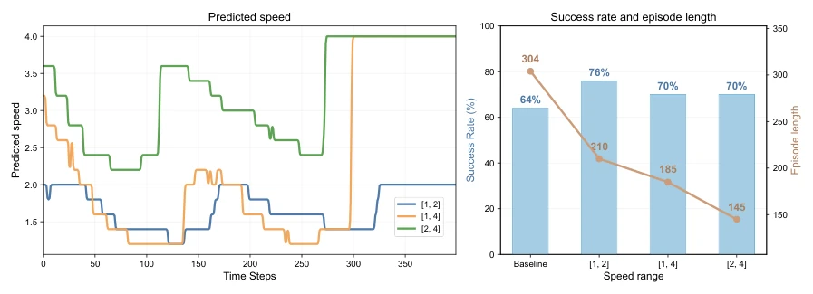
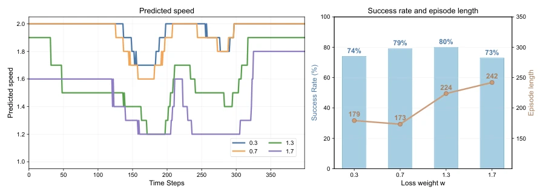

This paper equips robots with a sense of "rhythm". Existing imitation learning strategies act like parrots, moving as slowly as the expert demonstrations, regardless of task difficulty. AutoSpeed attempts to let the strategy guess when to go fast and when to go slow on its own, requiring no annotations whatsoever. This approach is quite clever, using DCT for frequency domain speed variation while maintaining high-frequency details. However, could this implicit inference "guess" the rhythm incorrectly in certain complex tasks? After all, it doesn't tell the network what constitutes a "difficult stage", relying entirely on the cost function for guidance. The experimental data is indeed impressive, speed increased, success rate did not drop, but generalization for real-world deployment depends on future work, given the large noise difference between simulation and reality. Overall, it is a practical engineering improvement, with slightly insufficient theoretical depth, but wins in simplicity and effectiveness, requiring no extra annotation cost, suitable for rapid deployment.
Imitation Learning (IL) is very popular in visual motor policies, but most strategies directly imitate the speed of expert demonstrations [6]. Expert demonstrations are often not optimal, leading to low strategy efficiency. Moreover, existing methods typically use fixed-length action chunks (action chunking) [40], unable to adjust the prediction horizon according to task stages. Some works attempt acceleration, but rely on extra annotations or proxy strategies, such as Demospeedup requiring entropy estimation [11], ESPADA requiring VLM annotations [17]. This increases cost and complexity. Different task stages have different difficulties; simple stages should be fast with long horizons, fine stages should be slow with short horizons, consistent with human motor control. Existing methods lack this annotation-free adaptive capability. Furthermore, fixed horizons limit reaction speed in simple tasks and reduce accuracy in complex tasks. AutoSpeed aims to resolve this contradiction, achieving stage adaptation through implicit learning of speed ratios, unifying speed control and temporal reasoning.

Figure 1. Stage-aware motion speed adaptation. Motion speeds in expert demonstrations are often suboptimal. AutoSpeed aims to train policies to predict future trajectories with stage-aware motion speed without requiring speed or stage annotations.
方法Method
AutoSpeed 是一个模型无关的框架。核心是“多目标选择性优化”。首先，对原始轨迹进行 DCT 频域变换，生成不同速度比率（如 0.8x 到 2.2x）的候选轨迹，这保证了非整数变速且平滑，能保留精细操作的高频细节。然后，构建复合代价函数 J，权衡预测误差 E 和预测视界 h（J = E / (w + log(h))）。网络选择代价最小的候选目标进行优化，简单阶段误差小视界长，复杂阶段反之。同时训练一个轻量级 Ratio Head 预测速度比率。对于生成式模型，采用三阶段训练策略：初期平均损失，中期多目标优化，后期固定 Ratio Head 加速收敛。推理时，引入非线性时间聚合（NTA）模块，解决不同速度块的时间对齐问题，确保动作平滑。
AutoSpeed is a model-agnostic framework. The core is "multi-objective selective optimization". First, perform DCT frequency domain transformation on original trajectories to generate candidate trajectories with different speed ratios (e.g., 0.8x to 2.2x), ensuring non-integer speed changes and smoothness, capable of retaining high-frequency details of fine operations. Then, construct a composite cost function J, balancing prediction error E and prediction horizon h (J = E / (w + log(h))). The network selects the candidate target with the minimum cost for optimization; simple stages have small error and long horizon, complex stages vice versa. Simultaneously train a lightweight Ratio Head to predict speed ratios. For generative models, adopt a three-stage training strategy: initial average loss, mid-term multi-objective optimization, late-stage fixed Ratio Head to accelerate convergence. During inference, introduce a Nonlinear Time Aggregation (NTA) module to solve time alignment issues of different speed blocks, ensuring smooth actions.

Figure 2. Overview of AutoSpeed. Training with AutoSpeed is formulated as a cost-aware multi-target selective optimization problem, where trajectories at different motion speeds form a set of candidate supervision targets. AutoSpeed performs mode selection by minimizing a composite cost 𝐽that trades off prediction error against prediction horizon, and optimizes the policy toward the target with minimum cost.

Figure 3. (a) and (b) contrast generative-model training with and without AutoSpeed. With AutoSpeed (b), each sample is guided toward the target that attains the lowest cost.

Figure 4. Illustration of conventional temporal aggregation and our Nonlinear Temporal Aggregation (NTA). (a) When action chunks are defined on a uniform temporal grid, predictions from different history steps are naturally aligned, and the actions at the same current step can be directly aggregated. (b) AutoSpeed enables adaptive motion speed learning, so corresponding actions are no longer aligned. NTA selects the actions associated with the same episode progress from different chunks for aggregation.
实验Experiments
在 ALOHA、LIBERO-10、Meta-World 仿真及 Agilex Piper 真实机器人上测试。基线包括 ACT 和 BAKU（DiT/Flow）。指标看成功率（SR）和完成时间/长度。结果显示，AutoSpeed 显著缩短任务时间（ALOHA 上提速 1.7 倍，LIBERO 上提速 40%），且成功率持平或提升（真实任务 Place the Toy 提升 10%）。消融实验表明，速度范围设置影响保守与激进风格，但都能学到阶段感知模式。NTA 模块对真实世界部署至关重要。具体在 Transfer Cube 任务中，步骤从 272 降至 160。在 Meta-World 上，BAKU-Flow 成功率从 57% 提升至 65%。训练开销增加有限，主要在于生成式模型的去噪步骤。
Tested on ALOHA, LIBERO-10, Meta-World simulations, and Agilex Piper real robots. Baselines include ACT and BAKU (DiT/Flow). Metrics look at success rate (SR) and completion time/length. Results show AutoSpeed significantly shortens task time (1.7x speedup on ALOHA, 40% speedup on LIBERO), and success rate remains flat or improves (real task Place the Toy improved by 10%). Ablation studies show speed range settings affect conservative and aggressive styles, but both learn stage-aware patterns. The NTA module is crucial for real-world deployment. Specifically in the Transfer Cube task, steps reduced from 272 to 160. On Meta-World, BAKU-Flow success rate increased from 57% to 65%. Training overhead increase is limited, mainly in the denoising steps of generative models.

Figure 5. Simulation Tasks. We select a total of 62 tasks from ALOHA Sim[40], MetaWorld[37], and LIBERO-Long[22], and use 50 demonstration trajectories for each task.

Figure 6. The speed ratio curves of two real-world tasks correspond to the task stages. Under the AutoSpeed framework, the inferred speed ratios closely align with task stages.

Figure 7. Ablation on Speed Range Bounds. Left: Predicted motion speed trajectories over time steps for AutoSpeed variants on the ALOHA Transfer Cube task. Despite different predefined bounds, all variants exhibit a consistent phase-aware pattern, autonomously decelerating during complex interaction stages. Right: Comparison of task success rates (bars, left axis) and average episode lengths (line, right axis) with all variants outperforming the vanilla baseline.

Figure 8. Ablation on the length penalty coefficient 𝑤. Left: Predicted motion speed trajectories over time steps for AutoSpeed variants on the ALOHA Transfer Cube task. Right: Comparison of task success rates and average episode lengths.